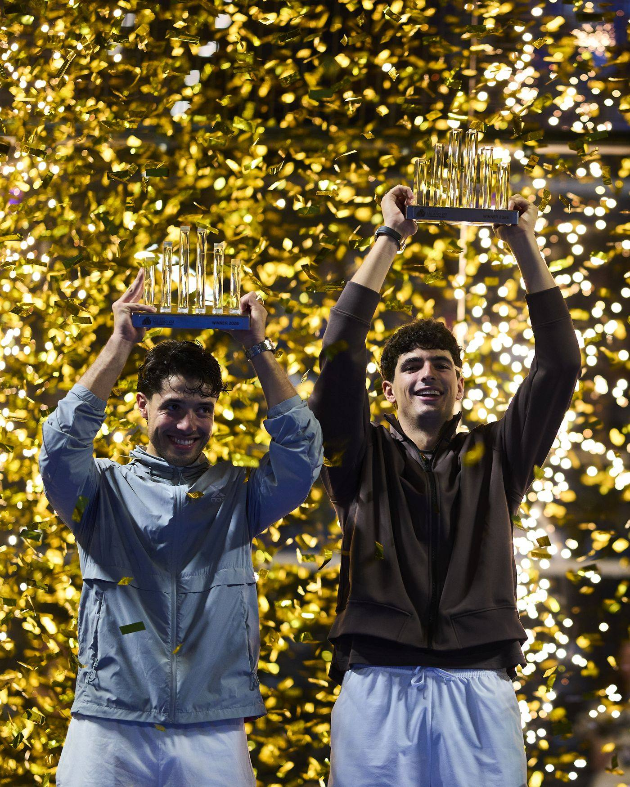

News ·
Coello and Tapia come back in Milan: three titles in three weeks
They dropped the first set to Augsburger and Lebrón and won 4-6, 6-3, 6-2. In the women's final, Ari Sánchez and Andrea Ustero beat Josemaría and González again: 7-6, 6-3.